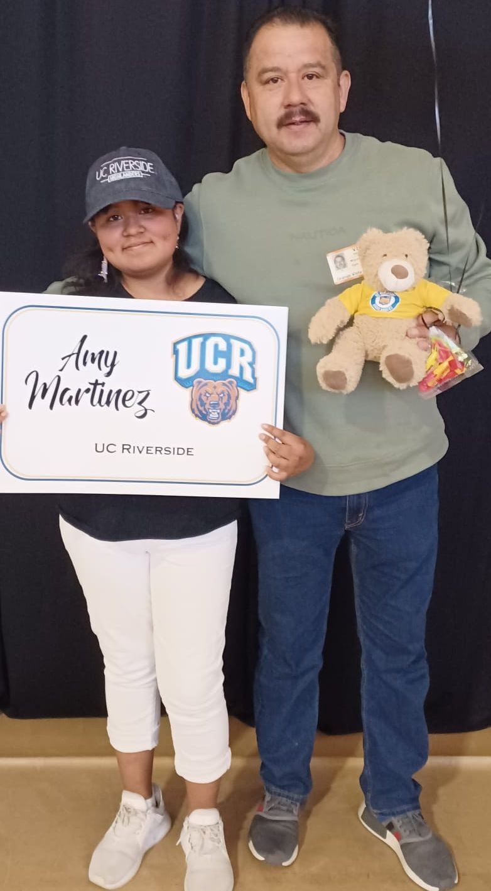
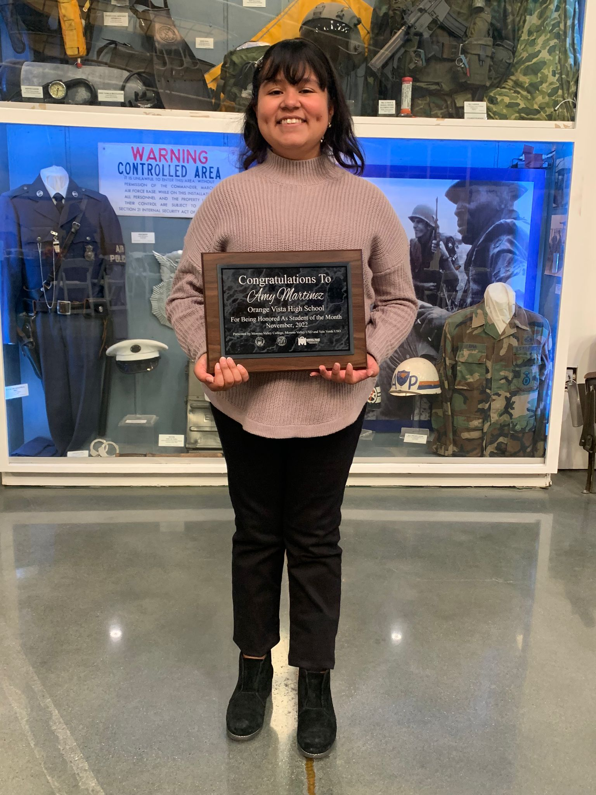
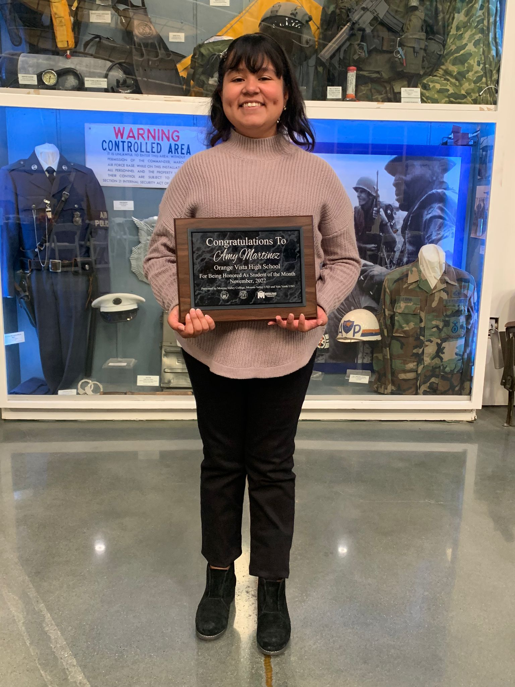
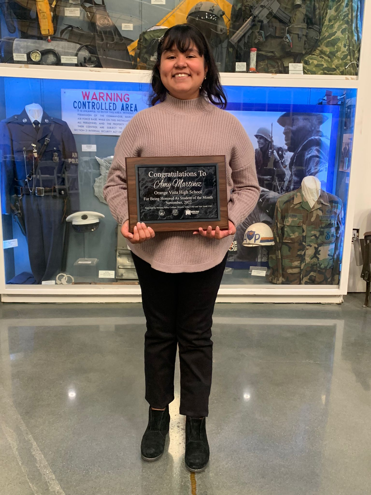

Education
UC Riverside
Bachelors in Spanish
Concetration in Spanish Linguistics
August 2023 - June 2027
University of California Riverside
Graduate Certificate in Spanish
Spanish Lingusitics
Portfolio

 

